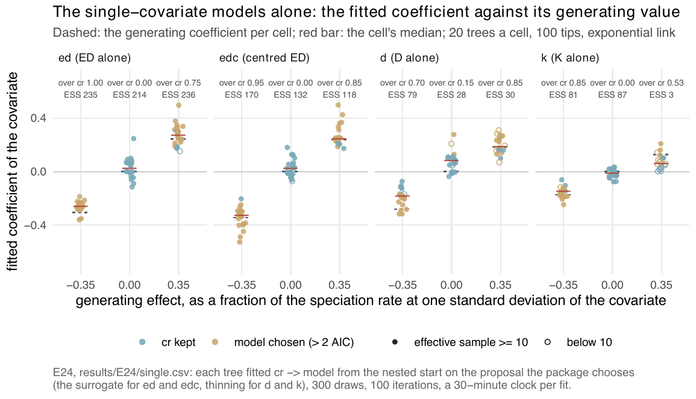

E24 — The single-covariate models ed, edc, d, k
| Status | complete (240 trees). The ed rows are superseded by E24b (below); the edc, d and k rows stand |
| Package build | E24 not recorded; E24b emphasis f30a791 |
| Driver / analysis | sim/E24-single.R; figure fig-s-single-recovery |
| Data | results/E24/single.csv (240 rows), results/E24b/single.csv (60 rows) |
Question
Four of the package's ten models had no recovery measurement of any kind: ed, edc, d and k, a lineage-level covariate alone with no \(N\) term. E2 fitted ed only as a candidate, and E8 only as a rival. E24 applies the E21 (E21a) design to each of the four.
Design
| parameter | value | meaning |
|---|---|---|
| generators | ed, edc, d, k |
\(\lambda_s = \exp(\beta_0 + \beta_X X_s)\), exponential link |
| effect \(e\) | 0, -0.35, +0.35 | \(\beta_X = \log(1+e)/\mathrm{sd}(X)\): the rate one scale unit above the mean is \(1+e\) times the rate at the mean |
| scale \(\mathrm{sd}(X)\) | spread of the covariate over lineages alive at the present in cr clades of 100 tips (lineage_table()) |
ED 1.22-1.41, centred ED 1.25, D 1.54-1.62, K 2.36-2.50 |
| tips, turnover, crown | 100 (trees 60-160), 0.10, 15 | the speciation intercept bisected per cell to a median of 100 tips |
| trees per cell | 20 | 12 cells, 240 trees |
| fit | the ladder cr → model, started from the cr estimate with the new coefficients at zero |
|
| proposal | the package's choice: surrogate for ed, edc; thinning for d, k |
|
| draws, iterations, clock | 300, max_iter 100, 30 minutes per fit |
|
| box | sim/box.R on the exponential link |
Generating coefficients per unit: ed (E24b) -0.307 and +0.246; edc -0.344 and +0.241; d -0.280 and +0.185; k -0.173 and +0.127. The extinction slope is generated at zero.
Pre-set rule
The E19 rule on \(\beta_X\), against cr: at \(|e| = 0.35\), median \(\hat\beta_X/\beta_X \in
[0.75, 1.25]\), the right sign on \(\ge 80\%\), the model over cr by \(> 2\) AIC on \(\ge 80\%\); false positives \(\le 5\%\) at zero; cells with median effective sample below 10 reported and excluded from the selection statement. A cell whose calibration finds no intercept that produces 100-tip clades is reported and not fitted (none was needed).
Results
| model | effect | ratio (q1-q3) | sign | median ESS of 300 | fits < 10 | over cr by > 2 AIC (median \(\Delta\)AIC) |
stops conv/cap/clock | fitted \(\gamma\) per unit (gen 0) |
|---|---|---|---|---|---|---|---|---|
edc |
-0.35 | 0.96 (0.87-1.14) | 1.00 | 170 | 0 | 0.95 (18.9) | 0/13/7 | -0.105 |
edc |
0 | median \(\hat\beta\) +0.024 | — | 132 | — | FP 0.00 | 0/2/18 | -0.096 |
edc |
+0.35 | 1.02 (0.93-1.33) | 1.00 | 118 | 2 | 0.85 (4.7) | 0/9/11 | +0.051 |
d |
-0.35 | 0.67 (0.60-0.83) | 1.00 | 78.8 | 1 | 0.70 (6.2) | 1/17/2 | +0.026 |
d |
0 | median \(\hat\beta\) +0.08 | — | 28.2 | 5 | FP 0.15 | 0/9/11 | +0.36 |
d |
+0.35 | 1.01 (0.87-1.41) | 1.00 | 29.5 | 6 | 0.85 (5.3) | 0/15/5 | +0.37 |
k |
-0.35 | 0.87 (0.72-1.06) | 1.00 | 80.7 | 1 | 0.85 (6.9) | 0/6/14 | +0.102 |
k |
0 | median \(\hat\beta\) -0.015 | — | 87.4 | — | FP 0.00 | 0/3/17 | +0.104 |
k |
+0.35 | 0.46 on 19 / 0.51 on 20 | 1.00 | 2.6 | 14 of 19 | 0.53 (19 trees) | 0/3/17 (median 5 iterations) | +0.002 |
The k +0.35 cell is sampler-limited (median ESS 2.6). Its ratio is 0.46 in the README, the supplement and fig-study-recovery (19 trees with an AIC) and 0.51 over all 20 rows (one tree, k = 15, has a coefficient but no AIC or ESS after 5 iterations on its clock). The \(\gamma\) for edc and k follow the effect order -0.35, 0, +0.35. Most cells are clock-limited by the later convention (more than a tenth of fits on the clock in every cell but d at -0.35).
The superseded ed rows of E24 (old simulator): ratio 0.77 / 1.05, over cr 1.00 / 0.70, FP 0.10, ESS 246 / 157 / 113 (-0.35 / 0 / +0.35).

cr by > 2 AIC; open = ESS below 10. The ed panel shows E24b's trees (the figure caption names E24's file). edc sits on its dashed lines at both signs; d at -0.35 and k at +0.35 fall short.E24b — ed under the exact simulator
The forward simulator used for E24 held every lineage's rate fixed between events. Raw ED grows between events, so under a negative ED coefficient the simulator placed events early. From emphasis f30a791 the waiting time is drawn by thinning against a bound on the hazard, which is exact. Measured on 400 surviving clades (dev/simcheck_ed.R in the package): on the ned generators of E23 and E27 the two simulators agree (KS \(p\) 0.28-0.93 on tip count, \(\gamma\), Colless and branching times); on ed alone at E24's effect of -0.338 per unit the old simulator produced clades 30% larger (mean 25 against 19 tips, KS \(p < 0.001\)). E24's ed cells were therefore generated by a process the fitted model does not describe. E24b reruns the E24 design for ed only (effects 0, ±0.35, 20 trees a cell, cr → ed, surrogate, 300 draws, max_iter 100, 30 minutes, sim/box.R) under f30a791, with E24's rule.
| effect | gen \(\beta_{ED}\) (sd) | ratio (q1-q3) | sign | median ESS | fits < 10 | over cr by > 2 AIC (median \(\Delta\)AIC) |
stops conv/cap/clock | fitted \(\gamma_{ED}\) |
|---|---|---|---|---|---|---|---|---|
| -0.35 | -0.307 (1.41) | 0.85 (0.79-0.92) | 1.00 | 235 | 0 | 1.00 (20.3) | 17/0/3 | -0.634 |
| 0 | 0 | median \(\hat\beta\) +0.022 | — | 214 | — | FP 0.00 | 2/7/11 | -0.251 |
| +0.35 | +0.246 (1.22) | 1.10 (0.85-1.30) | 1.00 | 236 | 2 | 0.75 (5.5) | 8/0/12 | -0.730 |
27 of the 60 ed fits converged, 26 ended on the clock, 7 on the iteration cap. The extinction slope, generated at zero, is fitted at -0.25 to -0.73 per unit in every cell: the fit adds a brake on extinction the generator did not have.
Conclusion
edcmeets every half of the E19 rule at both signs: ratio 0.96 and 1.02, right sign on every tree, selection 0.95 and 0.85, no false positive. It is the only one of the four that does.ed(E24b): recovery met at both signs (0.85, 1.10); selection met at -0.35 (1.00) and not at +0.35 (0.75); false positives 0. On the old simulator's treesedhad a 0.10 false-positive rate; on exact trees it has none. The fitted extinction slope sits far from its generating zero in every cell.d: recovery met at +0.35 only (0.67 at -0.35); selection not met (0.70, 0.85); false positives 0.15, three times the ceiling, with the extinction slope fitted at +0.36 and +0.37 (zero and +0.35 cells) where it was generated at zero (the supplement reads the false positives as the slope buying its two parameters).k: -0.35 meets every half (0.87, sign 1.00, 0.85, FP 0.00); +0.35 is sampler-limited and not read.
The difference between ed and edc on null trees is the clade-level part of raw ED: \(\mathrm{PD}/N\) rises with the clade's age and falls with its diversity, a trend ed can fit on null trees and a covariate that sums to zero at every instant cannot. E24 measures only 100 tips, turnover 0.10 and complete sampling.